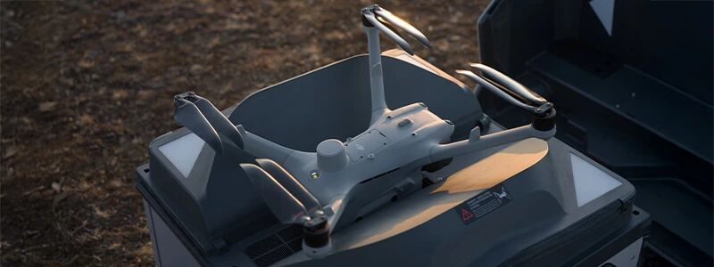

Détection automatique d'anomalies sur installations photovoltaïques, éoliennes. Vérifications d'avancement de chantier. Déploiement de stations autonomes DJI Dock 3.
Une double compétence unique alliant la maîtrise du BTP, de l'architecture et du vecteur drone.
Amaury Lafond
Fondateur & Télépilote Expert
Qui suis-je ?
Diplômé en Architecture et fort de plus de 8 ans d'expérience dans l'Immobilier neuf et le BTP, j'ai fondé Drone Vérif avec une conviction : l'inspection par drone exige d'abord une parfaite compréhension des structures et du bâtiment.
Nous ne faisons pas que piloter des aéronefs. Nous répondons à vos besoins en suivant vos actifs, identifiant les désordres techniques grâce à notre savoir-faire, des outils de pointe et l'intelligence artificielle. Afin de vous garantir des opérations professionnelles et strictly conformes, nous sommes certifiés afin de mener des opérations de diagnostics et d'inspections en tant que télépilotes professionnels.
Double Culture BTP & Drone
Conception architecturale, suivi de travaux et diagnostic d'actifs.
Certifié DGAC
Télépilote professionnel pour scénarios européens (CATS, A1, A2 et A3).
Vecteur lourd d'intervention haute autonomie avec radar mmWave. Conçu pour les relevés d'éoliennes, de structures complexes et le suivi de grands chantiers.
Inspection Lourd & Éolien
DJI Matrice 4E (Enterprise)
Aéronef d'inspection compact intégrant un capteur CMOS 4/3 de 20 MP à obturateur mécanique, téléobjectif longue portée et télémètre laser pour la cartographie rapide.
Photogrammétrie & Inspection Visuelle
DJI Matrice 4T (Thermal)
Vecteur thermique haute performance équipé d'une caméra infrarouge radiométrique, d'un capteur optique haute définition et d'une assistance à la détection par IA.
Thermographie Infrarouge
DJI Avata 2 (FPV)
Drone FPV ultra-compact à hélices carénées. Permet de réaliser des prises de vues et inspections de précision en espaces restreints, confinés ou en bâtiment.
Espaces Confinés & Intérieurs
Inspection Visuelle & Contrôle de Structures
Diagnostic haute résolution des toitures, façades, structures et ouvrages d'art sans installation d'échafaudages.
L'inspection visuelle par drone offre une alternative rapide, sécurisée et économique à la mise en place d'engins d'élévation (nacelles, cordistes, échafaudages). Grâce à des téléobjectifs jusqu'à 112x et des capteurs photo 48 MP, nous détectons le moindre défaut structurel à plusieurs dizaines de mètres de distance.
Toitures & Couvertures : Identification des tuiles cassées, ardoises glissées, éléments de zinguerie défectueux, chéneaux obstrués et joints de dilatation altérés.
Façades & Bâtiments : Détection du faïençage, des fissures, de l'effritement du béton (spalling), du décollement d'enduit et des sinistres post-intempéries.
Ouvrages d'Art & Génie Civil : Relevé d'états sur ponts, viaducs, pylônes haute tension, cheminées d'usines et châteaux d'eau.
Lieux confinés / Intérieurs : Utilisation de nos drones FPV sécurisés avec cage de protection pour inspecter les charpentes, silos, structures sous-toiture ou gaines techniques.
Livrables Fournis
Galerie complète de photos géoréférencées ultra-haute résolution (4K / 48MP).
Séquences vidéo ultra-stabilisées enregistrées en 4K.
Rapport d'expertise structuré avec localisation exacte de chaque défaut sur plan/carte.
Fiche de synthèse pour l'expert d'assurance, le syndic ou le gestionnaire d'actifs.
Informations Clés
Matériel utilisé : DJI Matrice 4E Enterprise, DJI Avata 2 (Intérieur/FPV).
L'inspection des pales d'éoliennes par drone permet d'identifier l'usure de surface et les anomalies internes invisibles depuis le sol. Nos drones équipés de zooms optiques puissants et de capteurs thermiques réalisent des relevés complets en un temps record.
Inspection des Pales (4 faces) : Détection de l'érosion du bord d'attaque, delamination, micro-fissures, décollement du gelcoat et impacts de foudre.
Contrôle de la Nacelle & du Mât : Vérification de l'état des peintures, fuites d'huile, corrosion des assemblages boulonnés et état des anémomètres.
Thermographie en Fonctionnement : Analyse des échauffements anormaux au niveau du multiplicateur, du générateur et des roulements.
Réduction des Temps d'Arrêt : Inspection d'une éolienne complète en moins de 45 minutes pour maximiser la production énergétique.
Livrables & Rapports d'Inspection
Cartographie complète des 3 pales déroulées en haute résolution.
Rapport d'anomalies géolocalisées avec cotation de sévérité (Catégories 1 à 5).
Recommandations d'interventions prioritaires pour les équipes de maintenance cordistes.
Intégration des données dans vos plateformes de gestion d'actifs (Asset Management).
Informations Clés
Matériel utilisé : DJI Matrice 400 / 4E Enterprise avec téléobjectif 56x.
Temps d'immobilisation : ~45 minutes par éolienne.
Livrables : Rapport normé sous 48h.
Photogrammétrie & Modélisation 3D
Transformation de données aériennes en modèles 3D centimétriques, cartes géoréférencées et relevés topographiques.
La photogrammétrie consiste à capturer des centaines d'images aériennes se chevauchant avec une précision millimétrique. Nos logiciels d'analyse reconstruisent ensuite virtuellement le terrain ou la structure en 3D avec une géolocalisation exacte.
Orthomosaïques 2D géoréférencées : Assemblage d'images haute résolution corrigées de toute distorsion pour obtenir une carte métrique ultra-précise de votre site.
Nuages de points 3D (Point Cloud) : Génération de fichiers d'ingénierie (LAS, OBJ, PLY) réutilisables dans vos logiciels CAD/BIM (AutoCAD, Revit, QGIS).
Calculs de Cubatures & MNT/MNC : Mesure automatisée de stocks de matériaux (carrières, chantiers BTP, terrassements) avec volume de remblai et déblai.
Modèles Numériques de Terrain (MNT) : Analyse de relief, gestion des écoulements d'eau et relevés topographiques pour géomètres et urbanistes.
Formats d'Exportation
Orthophotos géotiff, DWG, DXF, SHP.
Nuages de points LAS, LAZ, PTS, E57.
Maquettes numériques 3D texturées OBJ, FBX, 3MX.
Rapport volumétrique complet avec tolérances et marges d'erreur centimétriques.
Informations Clés
Matériel utilisé : DJI Matrice 4E à obturateur mécanique, RTK/PPK centimétrique.
Précision : Jusqu'à 1 à 2 cm/pixel (selon altitude et cibles GCP).
Grâce à des capteurs infrarouges radiométriques de haute sensibilité thermique (NETD < 50mK), nos drones enregistrent la température exacte de chaque pixel de la structure pour mettre en évidence les anomalies invisibles à l'œil nu.
Bilan d'Isolation & Déperditions : Repérage des fuites de chaleur sur toitures, combles, bardages et jonctions de maçonnerie.
Infiltrations d'Eau & Humidité : Cartographie des zones d'accumulation d'humidité sous étanchéité de toitures terrasses avant qu'elles ne provoquent des dégâts majeurs.
Réseaux de Chaleur & Électricité : Contrôle des surchauffes sur transformateurs, câbles, gaines techniques et installations industrielles.
Ponts Thermiques : Analyse complète des faiblesses d'enveloppe du bâtiment pour la rénovation énergétique.
Livrables & Rapport Thermique
Clichés radiométriques analysables avec palettes thermiques adaptées (Iron, Rainbow, Isothermes).
Superposition d'images thermiques et visuelles (Mode MSX / Dual Light).
Rapport d'audit thermique indiquant les Deltas de température et les recommandations de travaux prioritaires.
Informations Clés
Matériel utilisé : DJI Matrice 4T Thermal Radiométrique.
Conditions de vol : Vol de nuit ou tôt le matin (Delta thermique nécessaire > 10°C).
Délai de rapport : 48h.
Audit & Inspection Photovoltaïque
Optimisez la rentabilité et la sécurité de vos centrales solaires et toitures photovoltaïques par drone & IA.
Une cellule défectueuse ou une diode en court-circuit peut entraîner des pertes de rendement massives, voire des risques d'incendie. L'inspection thermographique par drone permet de scanner des milliers de panneaux par heure avec une précision chirurgicale.
Détection des Hotspots (Points Chauds) : Identification immédiate des cellules bloquées ou fissurées qui surchauffent.
Anomalies de Chaînes (Strings) : Repérage des strings ouverts, fusibles grillés ou problèmes d'onguleurs.
Diodes de By-Pass : Cartographie des sous-chaînes de modules hors service.
Etat des panneaux : Identification d'éclats, de fissures ou de saletés diminuant la performance des panneaux.
Analyse IA & Cartographie : Automatisation du traitement des images pour géolocaliser chaque panneau défectueux au numéro près.
Résultats & Livrables
Orthomosaïque thermique certifiée de l'ensemble du parc/toiture.
Rapport normé selon la norme IEC 62446-3 pour les garanties constructeurs.
Fichier de localisation GPS de chaque panneau nécessitant une maintenance ou un remplacement.
Grâce à la programmation de vols autonomes automatisés, nos drones reproduisent exactement les mêmes trajectoires de vol mois après mois. Cela vous garantit une comparaison rigoureuse de l'avancement du chantier.
Levée de doute : Un défaut à constater ou vérifier, pas besoin d'échafaudage ou de nacelle. Le drone effectuera la levée de doute en toute sécurité.
Contrôle d'Avancement des Travaux : Suivi des étapes clés (terrassement, fondations, gros œuvre, hors d'eau / hors d'air, aménagement extérieur).
Gestion des stock & Sécurité : Vérification de l'organisation de la base vie, du stockage des matériaux et du respect des périmètres de sécurité.
Lien avec les plans CAO, la Maquette BIM : Comparaison directe entre les relevés aériens et les plans d'exécution.
Contenu des Livrables
Dossier photo 4K daté, géoréférencé et archivé par phase de chantier.
Superposition d'orthophoto avec les plans d'exécution metant en évidence les écarts de construction.
Plateforme de visualisation en ligne sécurisée pour vos équipes et maîtres d'ouvrage.
Informations Clés
Rythme d'intervention : Hebdomadaire, mensuel ou trimestriel.
Matériel utilisé : DJI Matrice 400 / 4E, caméras 4K.
L'Intelligence Artificielle & L'Automations par Drone
Automatisation du traitement des données visuelles/thermiques et surveillance autonome 24/7 par station d'accueil autonome.
Inspections & Surveillances Automatisées avec DJI Dock 3
Découvrez le summum de l'inspection autonome. Grâce à la station autonome DJI Dock 3, déployez des drones directement installés sur vos sites sensibles (usines, parcs photovoltaïques, chantiers, sites Seveso) pour des missions de ronde, de surveillance et de diagnostic 100 % automatisées sans présence humaine requise sur place.

Missions de Vol Autonomes & Programmées : Décollage, inspection thermique/optique, retour et rechargement automatique dans le Dock sans aucune intervention technique.
Surveillance & Levée de Doute 24/7 : Déclenchement automatique de patrouilles aériennes en cas d'intrusion, de fuite thermique ou de détection d'incendie par capteurs au sol.
Gestion à Distance via DJI FlightHub 2 : Suivi des flux vidéo en direct HD, contrôle de la flotte depuis n'importe quel poste de régulation ou centrale d'alarme.
Résistance Extrême (IP55) & Charge Rapide : Conçu pour fonctionner sous toutes les conditions météo (pluie, vent, gel) avec recharge rapide du drone en moins de 25 minutes.
Inspection de Centrales & Parc Photovoltaïques par IA
L'inspection manuelle des grands parcs solaires ou des toitures photovoltaïques peut prendre des jours. En associant nos drones thermiques (ex. DJI Matrice 4T) à des algorithmes d'IA de vision par ordinateur, nous automatisons et accélérons le diagnostic complet de vos installations.
Détection automatique des points chauds (Hotspots) : Identification instantanée des cellules défectueuses provoquant des surchauffes et des pertes de rendement.
Cartographie des défauts structurels : Repérage des diodes de by-pass défaillantes, des chaînes de panneaux ouvertes (strings) et des fissures (micro-cracks).
Géolocalisation précise des anomalies : Génération automatique d'un rapport orthomosaïque radiométrique intégrant les coordonnées GPS de chaque panneau à remplacer ou réparer.
Gain de productivité : Inspection jusqu'à 10 fois plus rapide qu'un contrôle manuel au sol avec un rapport d'audit normé.
Suivi de Chantier & Diagnostic BTP assistés par IA
Pour le bâtiment, la promotion immobilière et les ouvrages d'art, l'IA permet d'analyser des milliers de clichés haute définition en un temps record pour sécuriser les chantiers et anticiper les désordres structuraux.
Détection précoce des désordres : Algorithmes entraînés à repérer automatiquement les micro-fissures sur le béton, l'effritement des façades, la corrosion des armatures métalliques ou les infiltrations d'eau.
Comparaison Modèle 3D vs Maquette BIM : Superposition dynamique entre les relevés drone par photogrammétrie et le modèle numérique théorique pour mesurer l'avancement exact des travaux.
Suivi automatique des volumes et cubatures : Calcul automatique des stocks de matériaux (terrassement, remblais) à partir des nuages de points générés.
Sécurité des sites : Repérage automatisé du port des EPI et analyse des risques sur les zones de travail en hauteur.
Atelier de Maintenance & Réparation de Drones
Assurez la navigabilité et la sécurité de votre flotte de multirotors professionnels ou loisir.
Obligation Légale de Navigabilité
En catégorie Spécifique et Ouverte professionnelle, l'exploitant a l'obligation légale de maintenir un registre de maintenance et d'assurer le parfait état de ses aéronefs (Réglementation AESA/DGAC). Nous vous accompagnons pour rester conforme.
Révision Préventive
Inspection complète des moteurs, hélices, capteurs, châssis et état de santé des batteries (Check-up pré-vol).
Réparation & Conception sur Mesure
Remplacement de bras, moteurs, ESC, nacelles/caméras. Calibration des centrales inertielles, micro-soudure SMD et programmation FPV.
Suivi & Conformité MANEX
Délivrance d'un carnet d'entretien détaillé après chaque intervention pour alimenter votre bilan de maintenance.
Équipements & Infras de l'Atelier
Station de Soudage SMD & Réparation PCB
Équipement haute précision avec air chaud, fer de régulation thermique et loupe trinoculaire pour la réparation de cartes électroniques, contrôleurs de vol et ESC.
Micro-Soudure & Électronique
Banc de Diagnostics & Démontage DJI
Poste de travail dédié au démontage intégral des vecteurs DJI Enterprise, au remplacement de pièces d'origine (bras, moteurs, nappes nacelles) et aux tests d'effort banc moteur.
Banc d'Essai & Diagnostic Hardware
×
Demande de Devis
Remplissez ce formulaire, nous vous répondrons sous 24h ouvrées.